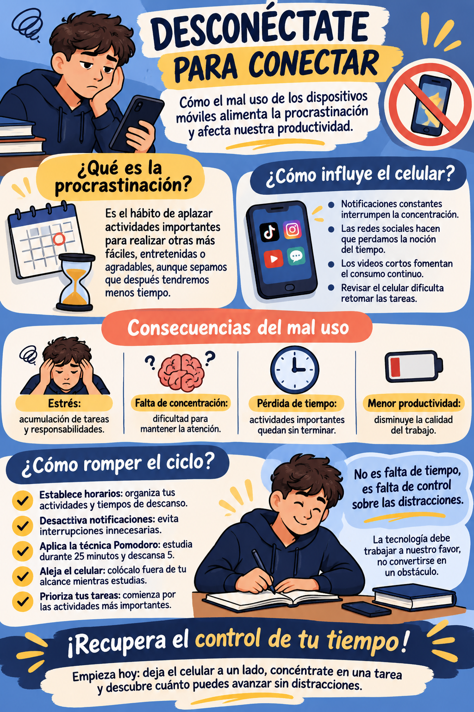

🔔
Interrupciones
Las notificaciones pueden cortar el ritmo de estudio o trabajo.
Descubre cómo el uso excesivo de los dispositivos móviles puede alimentar la procrastinación, afectar tu concentración y alejarte de tus objetivos.
Explorar el proyecto ↓
Una revisión rápida del celular puede convertirse en una cadena de notificaciones, videos y redes sociales que interrumpe lo que realmente queríamos hacer.
Es posponer una tarea o responsabilidad para realizar otra actividad más entretenida o inmediata, aunque sepamos que luego tendremos menos tiempo.
El celular no es el enemigo: el reto está en aprender a utilizarlo con intención y límites.
Las notificaciones pueden cortar el ritmo de estudio o trabajo.
Un momento de consulta puede alargarse mucho más de lo planeado.
Las responsabilidades se acumulan y aumenta la presión por terminarlas.
Esta infografía resume qué es la procrastinación, cómo influye el celular, cuáles son sus consecuencias y qué acciones ayudan a recuperar la concentración.
Ver infografía en tamaño completo ↗En tres minutos, acompañamos a un estudiante que se distrae con el celular, reconoce las consecuencias y pone en práctica hábitos para concentrarse.
Duración: 3 minutos · Formato: video educativo con un solo personaje.
Enlace del video: Ver video en YouTube ↗
Una conversación individual y reflexiva sobre hábitos digitales, procrastinación y pequeñas decisiones para usar mejor el tiempo.
Duración: aproximadamente 3 minutos · Formato: narración individual.
Enlace del podcast: Escuchar podcast en YouTube ↗
No necesitas abandonar la tecnología. Empieza por usarla de una manera más consciente.
Define qué tarea harás y cuándo.
Desactiva notificaciones innecesarias.
Déjalo fuera de tu alcance al estudiar.
Trabaja 25 minutos y descansa 5.
Comienza por lo más importante.
Tema central: la procrastinación y el mal uso de los dispositivos móviles.
Público objetivo: estudiantes y jóvenes que utilizan dispositivos móviles en su vida académica y cotidiana.
Mensaje principal: el celular puede ser una herramienta útil, pero debemos controlar su uso para proteger nuestra concentración y aprovechar nuestro tiempo.
Propósito: informar, sensibilizar y promover hábitos digitales responsables.
Identidad: nombre “Desconéctate para conectar”; colores azul oscuro, azul claro, amarillo, crema y coral; tono cercano, educativo y motivador.
| Elemento | Descripción del proyecto | Cómo se presenta |
|---|---|---|
| Nombre | Desconéctate para conectar | Identidad común en la página, infografía, video y podcast. |
| Problemática | La distracción causada por el uso frecuente del celular y su relación con la procrastinación. | Ejemplos cotidianos de interrupciones, aplazamiento de tareas y pérdida de concentración. |
| Objetivo general | Promover un uso consciente del celular para reducir las distracciones y mejorar la gestión del tiempo. | Información clara y recomendaciones aplicables a la vida diaria. |
| Público objetivo | Estudiantes y jóvenes usuarios de dispositivos móviles. | Lenguaje cercano, visual y fácil de comprender. |
| Mensaje clave | La tecnología debe ser una herramienta y no un obstáculo para nuestras metas. | “Tu tiempo vale más que una notificación”. |
| Formatos | Infografía, video educativo, podcast y sitio web. | Contenido visual, audiovisual, sonoro y escrito. |
| Canal principal | GitHub Pages | Centraliza y presenta todas las piezas del proyecto en una página web. |
| Canal complementario | YouTube | Aloja el video y el podcast para reproducirlos y compartirlos. |
| Identidad visual | Azul oscuro, azul claro, amarillo, crema y coral. | Diseño juvenil, moderno, educativo y coherente entre formatos. |
| Evaluación | Visualizaciones, reproducciones, visitas, clics e interacción. | Revisión de estadísticas y comentarios de la audiencia. |
| Resultado esperado | Mayor conciencia sobre el tiempo en pantalla y adopción de hábitos de concentración. | Que el público pruebe al menos una estrategia para evitar distracciones. |
Elementos sugeridos para que las piezas sean fáciles de encontrar, comprender y compartir.
| Contenido | Título optimizado | Palabras clave | Descripción, accesibilidad y acción |
|---|---|---|---|
| Infografía | Desconéctate para conectar: cómo evitar la procrastinación | Procrastinación, distracción digital, celular, concentración | Texto alternativo descriptivo, texto legible y consejos visuales. Acción: consultar y compartir la infografía. |
| Video | ¿Tu celular controla tu tiempo? | Cómo dejar de procrastinar | Uso del celular, productividad, hábitos de estudio, gestión del tiempo | Video educativo con un personaje. Añadir subtítulos y descripción. Acción: ver el video y aplicar un consejo. |
| Podcast | ¿Estamos perdiendo nuestro tiempo frente a una pantalla? | Bienestar digital, tiempo en pantalla, hábitos digitales | Audio narrado individualmente. Añadir descripción y transcripción. Acción: escuchar y reflexionar. |
| Página web | Desconéctate para conectar | Recupera tu tiempo | Procrastinación, bienestar digital, uso responsable del celular | Diseño adaptable a móviles, navegación por secciones, enlaces claros y textos alternativos. Acción: explorar todas las piezas. |